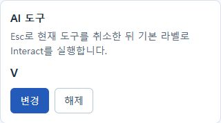
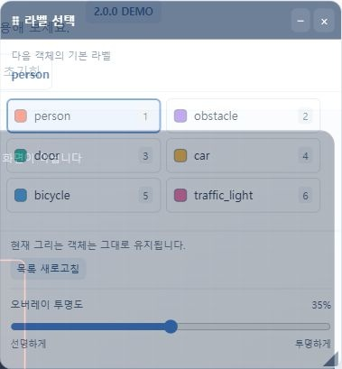
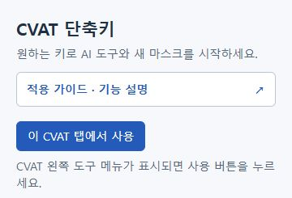
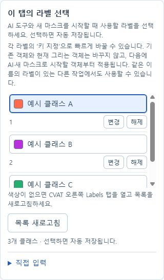
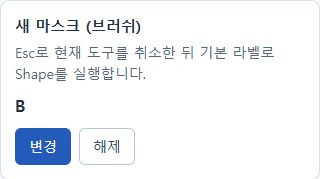
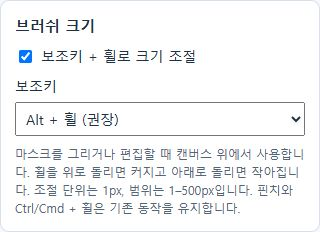
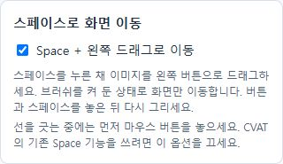

AI 도구 → V
AI 도구 아래 지정 클릭 → 키보드 V.
화면에 V가 보이면 저장 완료.

CVAT SIDEBAR SHORTCUTS · 2.9.0
확장 켜기 → 도구 단축키 정하기 → 라벨 고르기.
설정은 자동으로 저장됩니다.
2.2.0 팝업은 위에서부터 도구 단축키 → 라벨 선택 → 화면 이동·브러쉬 설정 순서입니다. 아래 이미지는 이전 배치의 실제 확장 UI를 Chrome에서 캡처했습니다. 버튼 기능은 동일합니다. 회사 작업 대신 예시 라벨을 넣은 로컬 시연 화면입니다.
2.9.0 · 특정 라벨 찾기
여러 라벨을 고르면 그중 하나라도 있는 프레임을 보여줍니다. 라벨이 없는 프레임을 확인할 때는 누락 프레임 검사를 누르세요.
저장된 작업 기준이며 삭제 프레임과 Track의 Outside 구간은 제외합니다. 수정 후에는 CVAT에서 저장하고 다시 검색하세요.
2.8.0 · 선택 라벨 스캔과 편집
누락 검수와 편집은 따로 사용해요. 편집에서는 직접 고른 라벨이 있는 프레임을 새로 찾습니다. HTTP 사내 CVAT에서 범위 지정 시 나던 오류도 수정했습니다.
클래스 목록은 그대로 두고 그린 객체를 수정합니다. 숨김·필터로 가려진 객체도 포함합니다. Track은 Outside 구간을 빼고 프레임을 보여주지만, 편집은 검색된 전체에서 Track 단위로 합니다. Tag는 제외하고 Skeleton·잠금·보호 객체는 처리하지 않습니다. 삭제된 프레임에 객체 정보가 남으면 목록에 포함될 수 있고, 편집 대상을 확인하지 못하면 중단합니다.
라벨을 바꾸면 속성은 새 라벨의 기본값 규칙을 따릅니다. 스캔 이후 데이터를 수정했거나 5분이 지났으면 저장하고 다시 스캔하세요.
확장이 저장을 누르지는 않지만 CVAT 자동 저장 설정은 계속 적용됩니다. 중간에 실패하면 일부가 바뀌었을 수 있으므로 결과를 확인하세요. CVAT의 되돌리기는 객체별로 여러 번 필요할 수 있습니다. 지원하지 않는 CVAT 버전에서는 편집 연결을 확인할 수 없다고 안내합니다.
2.7.0 · 필수 라벨 검수
저장된 작업 기준입니다. 미저장 수정은 포함되지 않으며 이전 검사 결과가 자동으로 갱신되지는 않습니다.
선택은 서버·Job별로 기억하고, 완료 결과는 팝업을 닫아도 보관합니다. 검사를 시작한 뒤 팝업을 닫아도 완료 결과를 저장하지만 CVAT 페이지를 새로고침하면 다시 검사해야 합니다.
삭제 프레임과 Track의 Outside 구간을 반영합니다. 라벨이 최소 하나 있는지 확인하며, 객체 모양이나 손잡이 같은 세부 누락은 판단하지 않습니다. Tag·Skeleton Track은 지원하지 않습니다. 조회 오류는 검사 실패로 안내합니다.
이미지·외부 AI 서버 없이 현재 CVAT의 저장된 주석 데이터를 읽습니다. 프레임 이동은 기존 CVAT 입력칸을 사용합니다. 그리기·저장·재생을 마친 뒤 이동하세요. 지원하지 않는 CVAT 버전은 번호를 직접 입력해 이동하세요.
새 버전을 받았다면
현재 설치한 방식에 맞는 안내 하나만 따라 하세요.
chrome://extensions를 입력하세요.확장을 지웠다가 다시 설치할 필요는 없어요. 기존 설치를 유지하면 저장한 설정을 계속 사용할 수 있습니다.
웹스토어에서 새 버전이 배포되면 설치본에 업데이트가 적용됩니다. ZIP 덮어쓰기는 사용하지 않습니다.
버전은 chrome://extensions에서 해당 확장의 세부정보를 열어 확인하세요. 2.2.0이 적용됐다면 CVAT 작업을 저장하고 페이지를 새로고침한 뒤 확장을 다시 켜세요.
chrome://extensions에서 개발자 모드를 켜세요.설치 후 그 폴더를 삭제하거나 옮기지 마세요.
2.2.0 · 라벨 오버레이
확장 팝업에서 이 CVAT 탭에서 사용을 누르면 작업 화면 위에 라벨 선택창이 나타납니다. 이후에는 팝업을 열지 않고 라벨의 색상과 이름을 누르면 됩니다. 팝업의 라벨 선택창 사용을 끄면 선택창만 사라지고 단축키는 유지됩니다. 다시 켜면 저장된 위치·투명도로 나타납니다. 이 설정은 같은 Chrome 프로필의 활성화된 CVAT 탭에 함께 적용됩니다.
라벨 단축키와 선택 표시가 함께 바뀝니다. 현재 그리는 객체는 유지하고 다음 AI·새 마스크 또는 N으로 시작할 객체의 기본 라벨을 바꿉니다.
창 맨 아래 오버레이 투명도를 움직여 0~70%로 조절하세요. 0%는 선명하고 오른쪽으로 갈수록 뒤의 이미지가 비칩니다. 마지막 위치, 접힘 상태, 투명도는 이 Chrome 프로필에 저장됩니다. 일시정지하면 라벨창도 사라집니다. 목록을 읽지 못하면 CVAT의 Labels 또는 Overview를 열고 목록 새로고침을 누르세요.
옆 이미지는 실제 오버레이 코드를 예시 라벨로 실행한 데모 화면입니다. 회사 CVAT 작업 이미지는 포함하지 않습니다.

01 · 확장 켜기
“이 탭에서 사용 중입니다.”가 나오면 켜진 거예요.
CVAT를 새로고침하거나 새 탭에서 작업할 때는 이 버튼을 다시 눌러주세요.

02 · 라벨 선택
이 탭의 라벨 선택에서 새 객체에 쓸 라벨을 누르세요.
선택한 행에 파란 테두리가 생기면 끝입니다. 별도로 저장할 필요가 없어요.
선택한 라벨은 AI와 새 마스크가 함께 사용해요. 다른 CVAT 탭에서도 같은 설정이 적용됩니다.

새 기능 · 1.9.0
라벨 키는 현재 객체를 바꾸거나 브러쉬를 취소하지 않습니다. 지금 그리는 객체는 기존 라벨을 유지하고, 다음 객체부터 선택한 라벨을 사용합니다. 선을 긋고 있다면 마우스 버튼을 놓은 뒤 키를 누르세요.
설정은 이 Chrome 프로필의 탭들이 공유합니다. 다른 작업에서도 같은 이름의 라벨이 있을 때 사용할 수 있어요. 라벨이 없거나 이름이 중복되면 바꾸지 않고 안내합니다. 목록을 읽지 못하면 CVAT의 Labels 또는 Overview를 열어주세요.
확장을 켠 작업 화면에서는 지정한 AI·브러쉬·폴리곤·라벨 키를 CVAT보다 먼저 처리합니다. 실행이 잠시 불가능해도 같은 키의 CVAT 기능으로 넘어가지 않습니다. 원래 CVAT 기능을 쓰려면 해당 키 지정을 해제하거나 확장을 일시정지하세요.
입력칸·IME·대화상자의 입력은 유지합니다. Chrome이나 운영체제가 먼저 가져가는 단축키에는 적용할 수 없습니다. 확장 내부의 중복 키는 지정할 때 막으며, Space를 라벨이나 도구에 지정하면 화면 이동보다 해당 기능이 우선합니다.
03 · 단축키 지정
예를 들어 AI는 V, 새 마스크는 B로 지정할 수 있어요. 처음부터 V/B로 정해져 있는 것은 아닙니다.
AI 도구 아래 지정 클릭 → 키보드 V.
화면에 V가 보이면 저장 완료.

아래로 내려 새 마스크의 지정 클릭 → B.
화면에 B가 보이면 저장 완료.

이미 키가 있으면 ‘지정’ 대신 변경이 나와요. 단축키를 없애려면 해제, 지정 중 취소하려면 Esc를 누르세요.
새 기능 · 2.2.0
현재 도구 취소 → 선택한 라벨 적용 → Number of points 공란 → Simplify OFF → Shape 실행 순서로 진행됩니다. 점 개수를 미리 제한하지 않고 선을 그릴 수 있습니다.
단축키는 처음에는 미지정입니다. 기존 AI·브러쉬·라벨 키와 같은 키는 지정할 수 없습니다. 진행 중인 그리기·편집은 Esc처럼 취소될 수 있습니다. 라벨이나 옵션을 확인하지 못하면 시작하지 않고 안내합니다.
04 · 이제 사용해 보세요
현재 도구 취소 → 선택한 라벨 설정 → Interact 실행.
AI 모델은 CVAT에서 미리 골라 두세요.
현재 도구 취소 → 선택한 라벨 설정 → Shape 실행.
새 마스크를 그릴 준비가 됩니다.
위 V/B는 지정 예시예요. 다른 키를 저장했다면 그 키를 누르세요.
도구를 바꿀 때 Esc는 따로 누르지 않아도 됩니다. 진행 중인 그리기·편집은 Esc처럼 취소될 수 있어요.
브러쉬를 쓸 때
이미지 위에 마우스를 놓고 왼쪽 버튼을 뗀 상태에서 사용하세요.
Alt가 불편하면 오른쪽 화면의 보조키를 Shift + 휠로 바꾸세요. Mac의 Alt는 Option입니다.
아래 순서대로 사용하세요. 기존 휠 버튼을 누른 채 드래그하는 CVAT 기본 이동도 계속 사용할 수 있어요.

2.1.1 · N 라벨 연동
그리는 중에 라벨을 바꿔도 현재 객체는 유지됩니다. 이때 N은 현재 객체를 기존 라벨로 완료·종료하고, 다음 N부터 새 라벨을 사용합니다. Shift+N 다시 그리기는 그대로입니다.
N을 확장 도구나 라벨 단축키로 직접 지정했다면 지정한 확장 기능이 우선합니다. 글자를 입력하는 중이나 대화상자 안에서는 기존 입력을 유지합니다.
2.1.0에서 N 연동을 확인하지 못했다는 안내가 계속 나오던 문제를 2.1.1에서 수정했습니다. 새 버전으로 교체하고 확장을 새로고침하세요. CVAT 작업을 저장한 뒤 페이지도 새로고침하고 확장을 다시 켜세요. 계속 안내가 나오면 메시지의 확인 코드를 함께 알려주세요. AI·새 마스크·폴리곤 단축키도 사용할 수 있습니다. 라벨의 도형 형식이 이전 도구와 맞지 않으면 다른 라벨이나 도구를 선택하세요.
N 연동은 CVAT의 2D 기본 작업 공간에서 사용합니다. 실제 설치된 CVAT 버전에 따라 내부 연결을 지원하지 않을 수 있습니다.
새 기능 · 1.8.0
휠 클릭 이동과 같은 CVAT 이동 기능을 사용합니다. 브러쉬를 취소하거나 Esc를 누르지 않습니다.
스페이스를 먼저 놓으면 이동은 멈추고, 마우스 버튼을 뗄 때까지 그리기를 막아 실수로 선이 생기지 않도록 합니다.
기본으로 켜져 있어요. CVAT의 기존 Space 기능을 사용하려면 확장 팝업의 이 옵션을 끄세요. AI·새 마스크·폴리곤 단축키를 Space로 지정했다면 그 지정이 우선하므로 다른 키로 변경하거나 해제하세요. 글자 입력칸과 대화상자에서는 화면을 이동하지 않습니다.

1.7.2에서 이 문제를 수정했습니다. 확장 파일만 바꾸고 CVAT 새로고침을 빠뜨리지 않았는지 먼저 확인하세요.
작업 저장 → 확장 새로고침 → CVAT 새로고침 → 확장 켜기. 그래도 안 되면 화면 아래에 뜨는 안내 문구를 확인하세요.
CVAT 오른쪽 Labels 탭을 열고 확장에서 목록 새로고침을 누르세요. 목록도 읽지 못하면 Info → Overview를 연 뒤 다시 눌러보세요.
계속 안 되면 직접 입력을 펼쳐 정확한 라벨 이름을 붙여넣고 저장할 수 있어요. 같은 이름이 여러 개인 라벨은 선택할 수 없습니다.
확장 팝업을 닫았다 다시 열고 라벨을 확인하세요. 저장한 라벨이 그 작업에 없으면 사용할 라벨을 다시 골라주세요.
이 탭에서 일시정지를 누르세요. 저장한 키와 라벨은 유지됩니다.
가이드의 이미지도 확장에 포함되어 인터넷 없이 열립니다. 설정은 현재 Chrome 프로필에 저장되며 다른 컴퓨터로 자동 동기화되지 않습니다. 확장 자체는 작업 이미지를 읽거나 업로드하지 않습니다.
화면 알림은 시작·중지·오류 때만 표시합니다. 반복 횟수 안내는 화면에 계속 뜨지 않습니다.
위치를 따로 옮기지 않고 CVAT가 붙여넣은 상태를 확정합니다. 복사한 객체의 라벨을 그대로 사용합니다. 마우스 이동·다른 조작·탭 전환·마지막 프레임에서도 중지합니다.
느린 화면에서는 준비가 끝날 때까지 기다립니다. 15초 안에 붙여넣기나 이동을 확인하지 못하면 중지하며 자동 재시도하지 않습니다. Shape 하나, 기본 2D 화면, 기본 Ctrl+V와 F 설정을 사용하세요. 다중 복사·Track·객체 필터·특수 프레임 탐색은 지원하지 않습니다. CVAT 버전에 따라 내부 상태를 확인할 수 없으면 시작하지 않습니다.
2.7.1에서 Job 이동 후 오버레이의 상태 조회가 계속 실패하던 문제를 고쳤습니다. 자동 측정을 켰다면 새 Job에서 다시 측정하고, 수동 모드라면 새 Job에서 측정 시작을 누르세요. 이전 Job의 통계는 섞지 않습니다.
내 기기 연결은 Chrome이 감지한 온라인·오프라인 상태입니다. Wi-Fi 신호 세기, 공유기 품질, 인터넷 또는 CVAT 접속 성공을 확인하는 기능은 아닙니다. 브라우저가 오프라인을 감지하면 요청이 없어도 측정 중인 화면에서 알리고, 연결이 복구되면 끊김 알림을 지웁니다.
최근 5분의 완료 요청 최대 300건을 종류별로 집계합니다. 최근 1분의 서버 오류·연결 실패·요청 제한과 로그인 문제를 구분합니다. 요청이 없으면 최근 측정 없음으로 표시합니다.
요청 본문·이미지·인증정보·전체 URL을 기록하거나 외부로 보내지 않습니다. 기존 통신만 관찰하며 캐시와 취소는 제외합니다. 응답 시간에는 서버·네트워크·다운로드 시간이 포함됩니다. AI 작업 전체 완료, 서버 CPU·메모리, 저장 내용의 정확성은 판단하지 않습니다.